외곽 350m, IF 기하 250m, FAF alt 사용. Approach 속도 90→70→60kt, Departure 60→70→90kt. 두 방향 모두 새 CCW LSL.
사용자 지시에 따라 IF보다 높은 FAF도 연결했습니다. 해당 Approach는 IF 이후 상승하고, Departure는 FAF→IF에서 하강할 수 있습니다. 이를 계속 하강/계속 상승하는 절차라고 표현하지 않습니다. 실제 운항 승인·안전성 검증이 아닌 기하 후보 분석입니다.
전체 경로를 하나의 LSL로 생성한 뒤 원본 IF 링과의 유일한 교점을 IF로 잡습니다. IF에서 내곽 시계방향 접선에 합류하지 않으며, 동일 경로의 연속 접선으로 통과합니다. 외곽 IAF 후보 1000개, 참고 IF 점 1000개를 저장하지만, 실제 선정 IF는 이 격자 중 하나가 아니라 원본 링 위의 연속 교점입니다.
Outer 경계 밖 우회·여러 번 IF 링 통과·총 선회 180° 초과·자기교차는 배제합니다. 각 구간의 절대 구배는 2.36°와 250ft/NM 중 엄격한 값, 뱅크 ≤30°를 유지합니다. 90kt 기반 최소반경 378.62m 이상을 탐색합니다.
IF에서 Z를 250m에 맞춘 구간별 선형 보간을 사용하므로 종단 경사가 바뀔 수 있습니다. 수평 접선은 연속이지만 실제 롤·종단 전이·기체 성능·풍향·시간 분리는 포함하지 않습니다. 70m 고정 수직 기준이나 기존 Inner 선정 항로와의 공동 충돌 제약을 추가하지 않았습니다.
FAF별 후보 수와 필요한 최소 구간 길이를 함께 저장했습니다. 부족한 쌍은 임의의 원형 우회·구배 완화로 채우지 않습니다. 미연결은 현재 격자·반경·형태 필터 안의 결과이며 모든 가능한 연속 항로가 불가능하다는 증명은 아닙니다.
FAF 2쌍, Approach 2개 / Departure 2개. 미연결 쌍 [1, 2, 3, 5, 6, 7]. XY 교차 0쌍, 교점 최소 수직 간격 교차점 없음. Landing_Area 관통 2건.
Approach SHP · Departure SHP · IAF · IF · FAF · 경로·구간별 구배
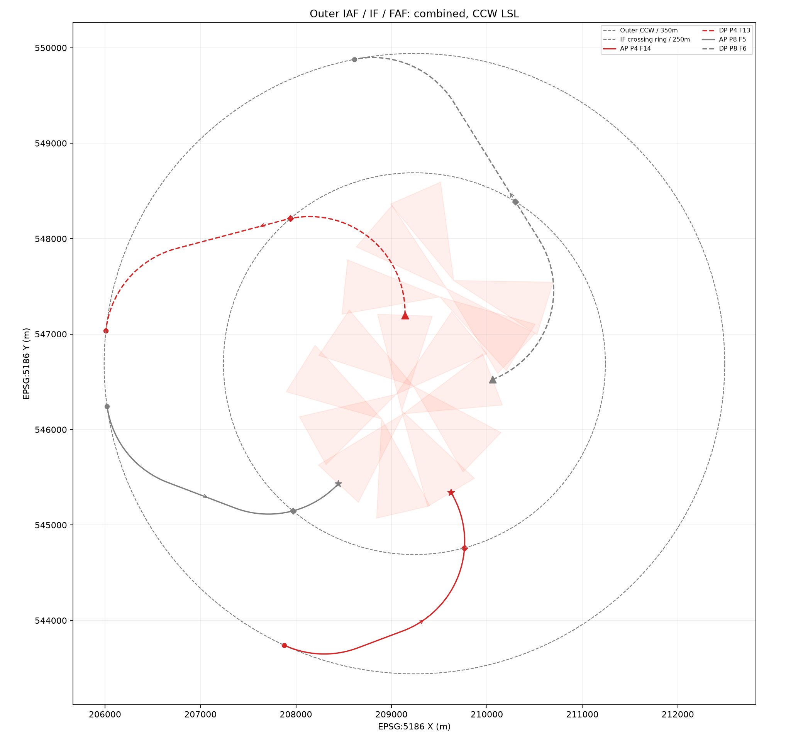
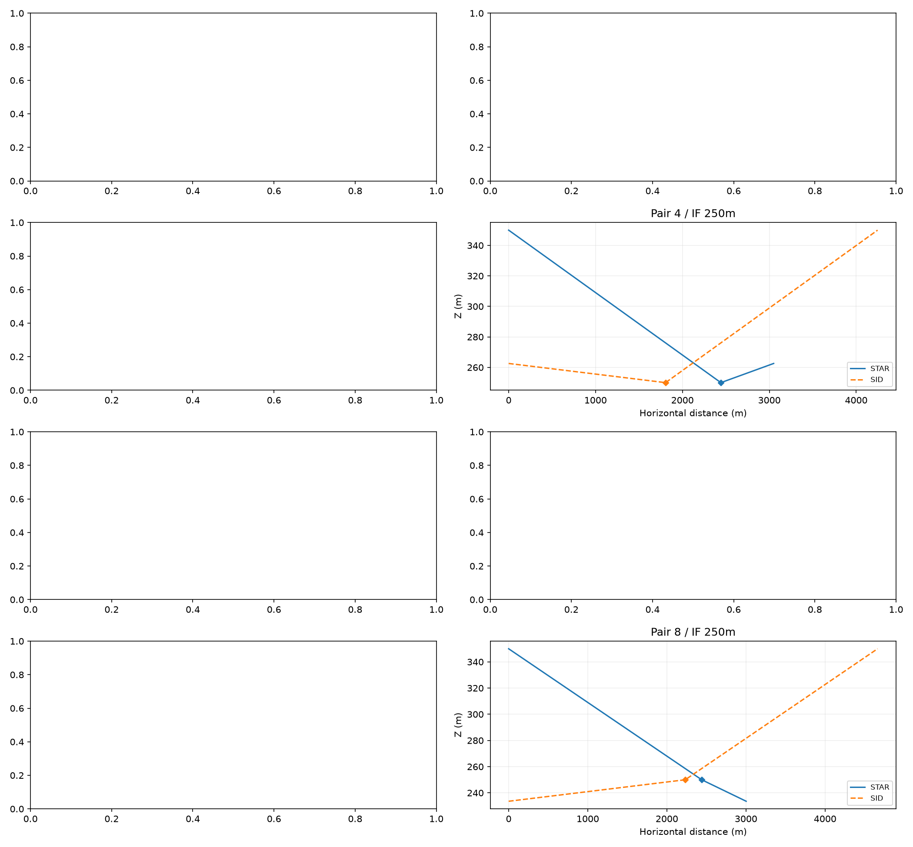
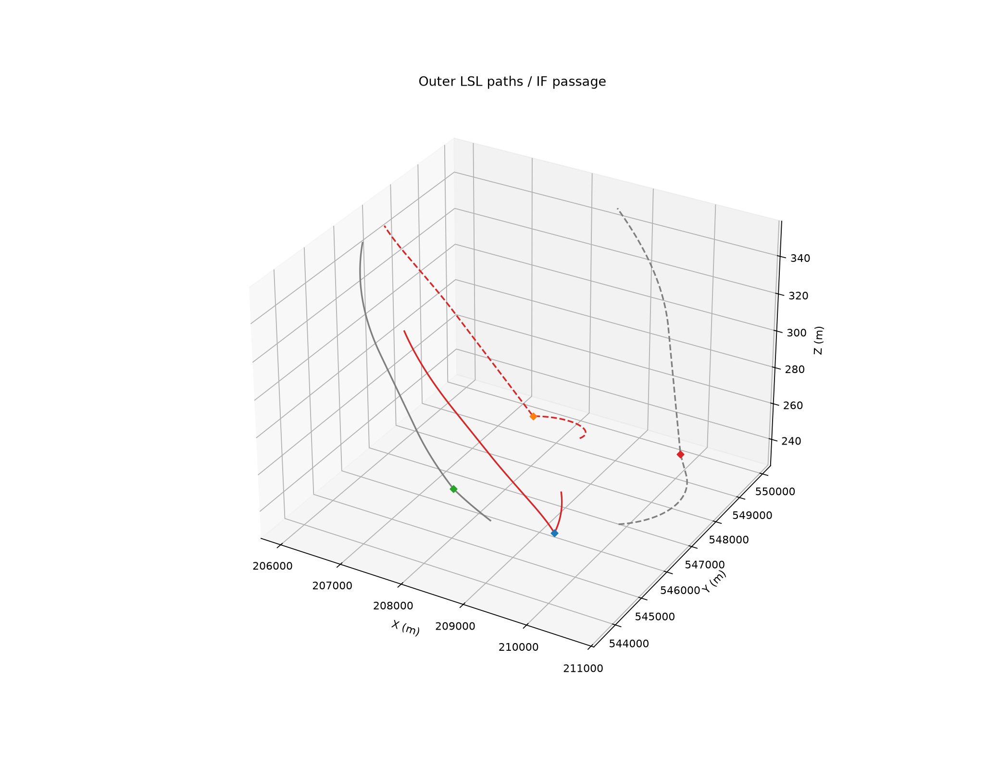
FAF 2쌍, Approach 2개 / Departure 2개. 미연결 쌍 [1, 2, 3, 4, 5, 8]. XY 교차 0쌍, 교점 최소 수직 간격 교차점 없음. Landing_Area 관통 0건.
Approach SHP · Departure SHP · IAF · IF · FAF · 경로·구간별 구배
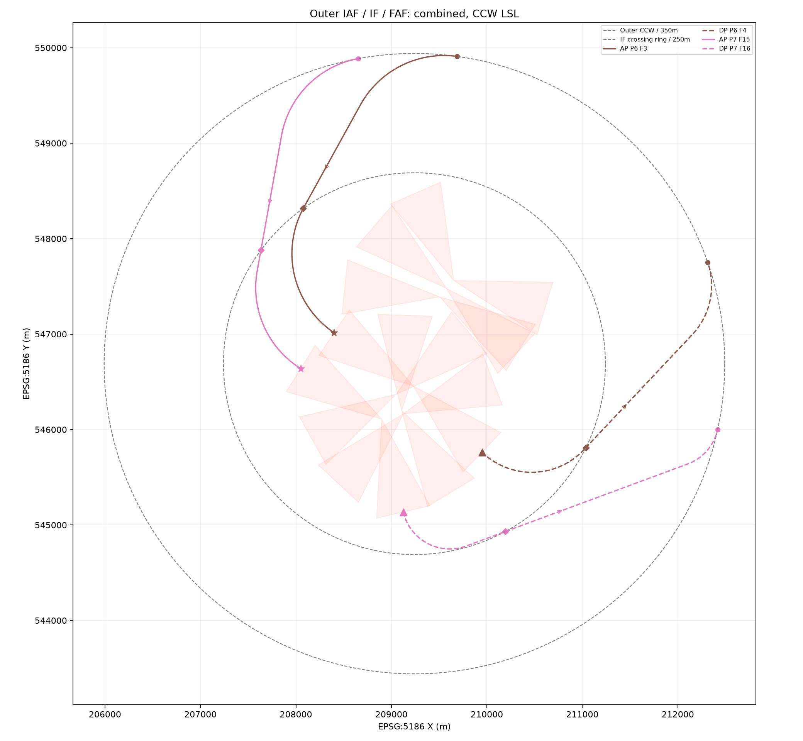
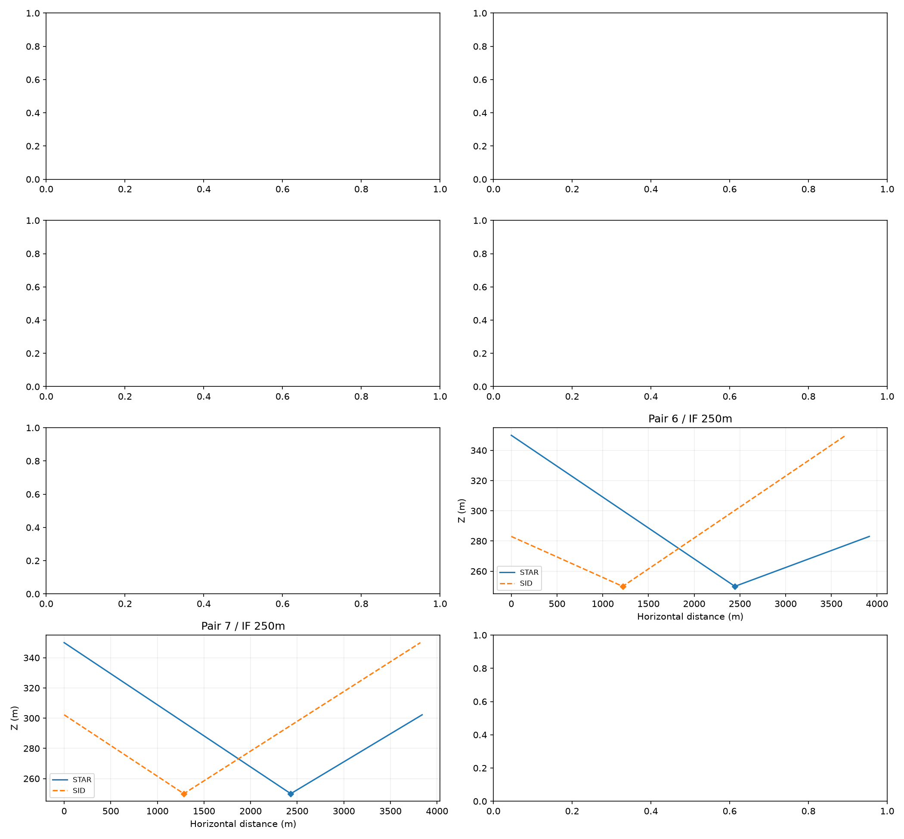
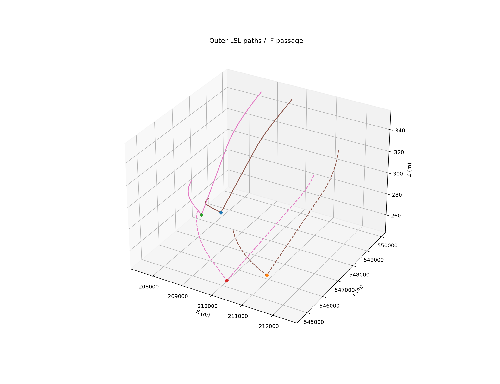
FAF 6쌍, Approach 6개 / Departure 6개. 미연결 쌍 [1, 3]. XY 교차 13쌍, 교점 최소 수직 간격 2.231m. Landing_Area 관통 6건.
Approach SHP · Departure SHP · IAF · IF · FAF · 경로·구간별 구배
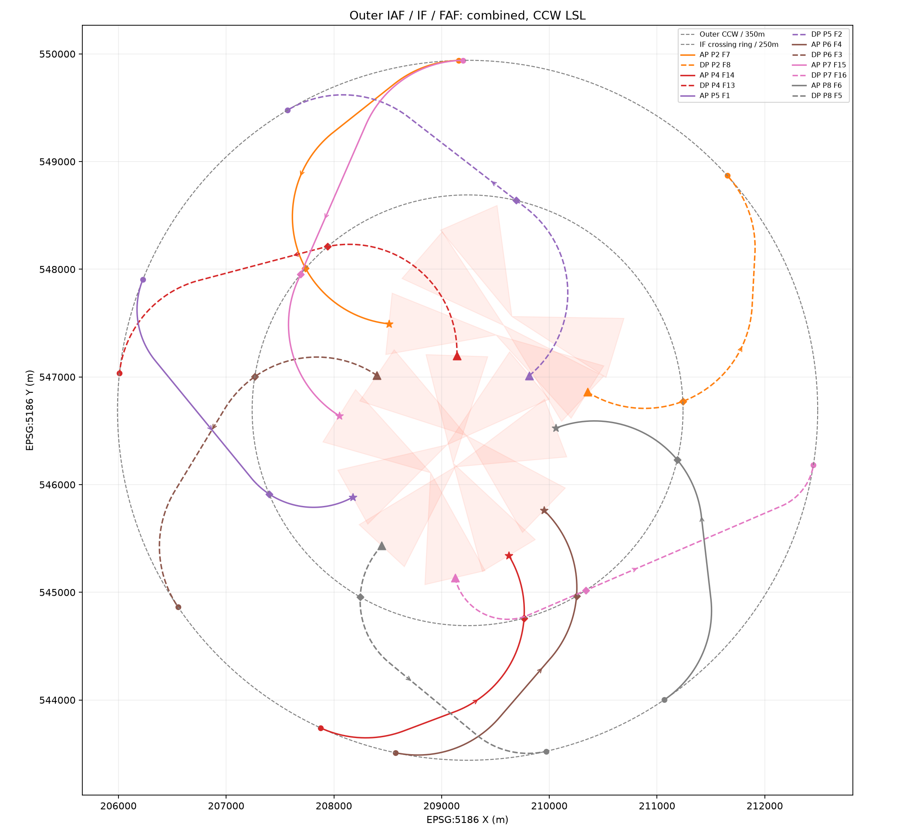
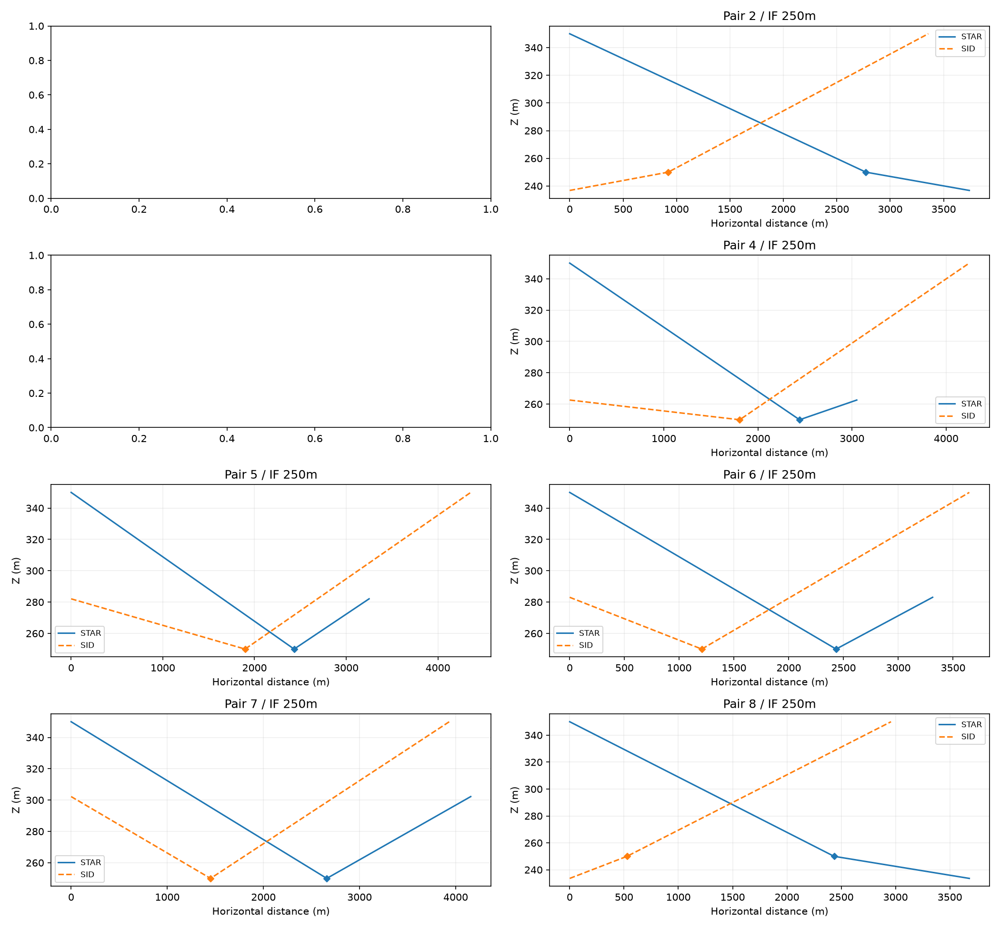
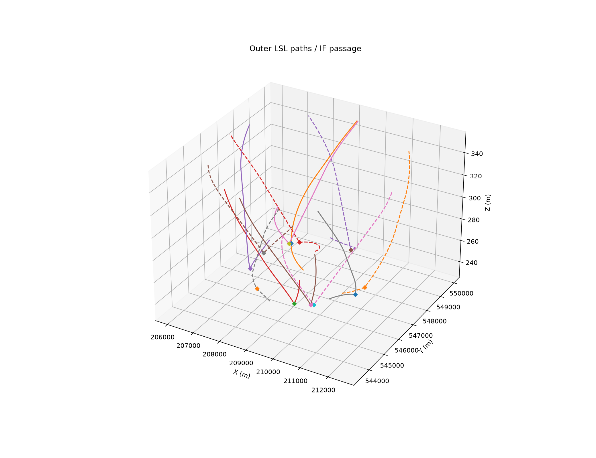
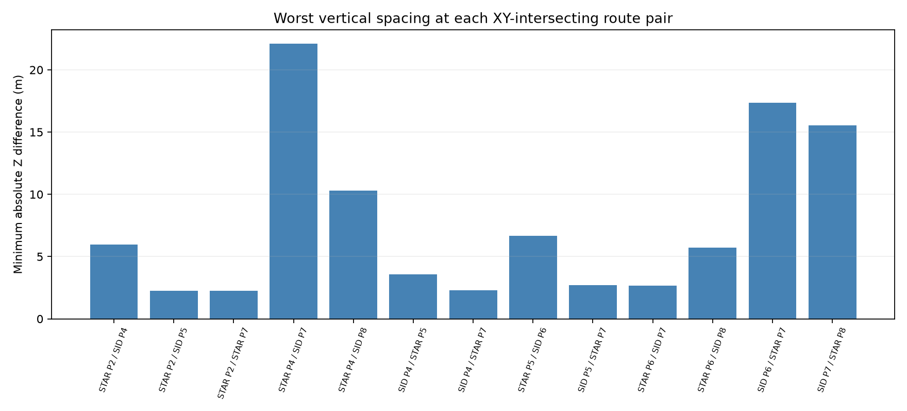
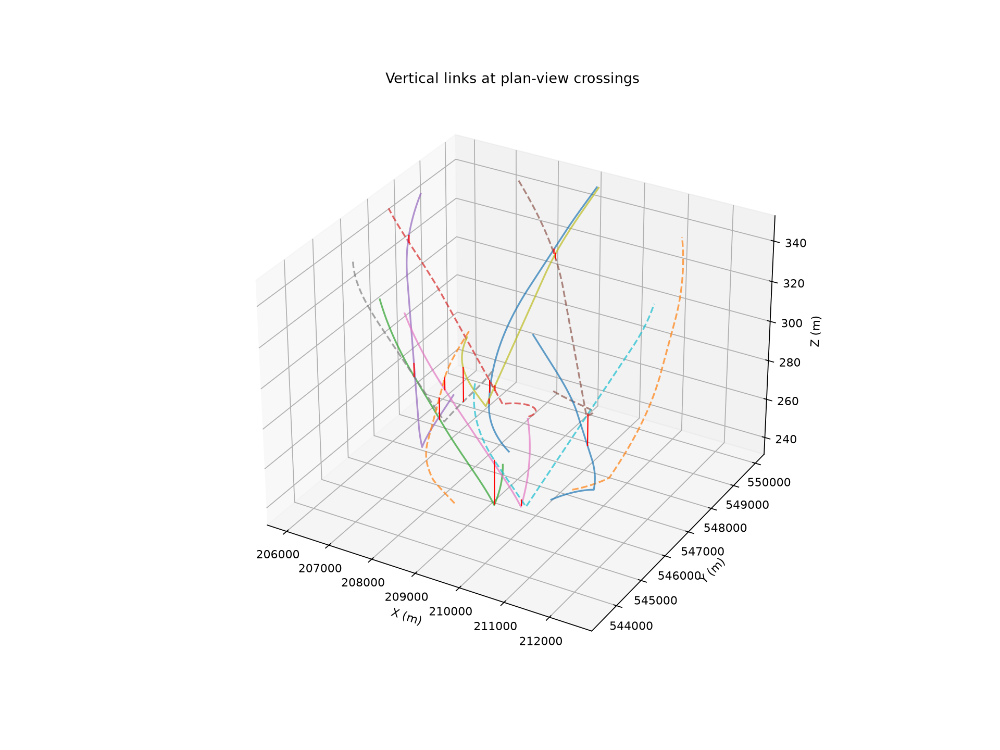
Landing_Area는 가능한 FAF 쌍에서 관통 금지, 불가능한 쌍만 페널티로 처리합니다. SHP는 저장 후 XYZ·IF 통과·양쪽 구배·LSL 방향을 검증합니다. 최적성은 선별 후보 집합의 범위입니다.
python -B 수정본_20261103/코드/optimization_new_options_add_outer.py python -B 수정본_20261103/코드/optimization_new_options_add_outer.py --self-check